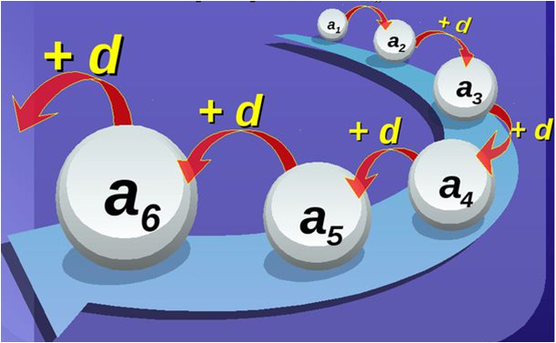
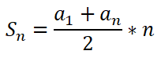
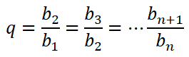
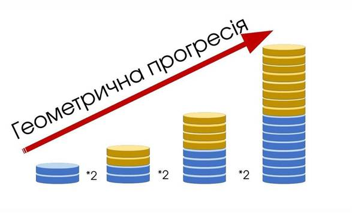
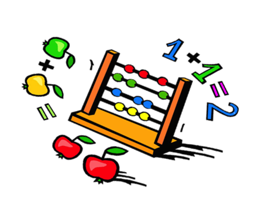
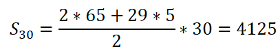

Числові послідовності
Послідовність - це множина будь-яких обєктів, розташованих у певному порядку.
Функції, область визначення яких є множиною натуральних чисел або його частиною, називаються числовими послідовностями.
Члени послідовності - це обєкти, які її утворюють.
Види числових послідовностей:нескінченна, скінченна, зростаюча, спадна.
Способи задання: алгебраїчний, рекурентний, графічний, словесний, таблицею, переліком членів.
Арифметична прогресія
Арифметичною прогресією називають послідовність, кожний член якої, починаючи із другого, дорівнює попередньому члену, до якого додається одне й те ж число.
1.Кожний член арифметичної прогресії, починаючи з другого, дорівнює середньому арифметичному двох сусідніх з ним членів.
2. Сума будь-яких двох членів скінченної арифметичної прогресії, які рівновіддалені від її крайніх членів, дорівнює сумі крайніх членів цієї прогресії.
3. Будь-яку арифметичну прогресію можна задати формулою an= dn + b, де b і d – деякі числа.
1. Формула n-го члена арифметичної прогресії має вигляд: an= a1+ d(n-1)
2. Щоб задати арифметичну прогресію, досить знати її перший член та різницю.
3. Сума арифметичної прогресії: 
Геометрична прогресія
Геометричною прогресією називають послідовність відмінних від нуля чисел, кожне з яких, починаючи з другого, дорівнює попередньому, помноженому на одне й те саме число: bn+1= bn*q
Це число називають знаменником геометричної прогресії: 
1. Квадрат будь-якого члена геометричної прогресії, починаючи з другого, дорівнює добутку двох сусідніх з ним членів, тобто:
bn2=bn-1*bn+1
2. Квадрат будь-якого члена геометричної прогресії, починаючи з другого, дорівнює добутку двох рівновіддалених від нього членів, тобто:
bn2= bn-k*bn+k
3. Якщо k, l, p і s – натуральні числа і k + l = p + s, то bk*bl= bp*bs
1. Яка з наведених послідовностей є геометричною прогресією?
A) 2; 4; 6; 8;
Б) 20; 10; 5; 2,5;
В) 13; 31; 13; 31;
Г) 14; 31; 62; 124;
2. Знайти q, якщо b4= 10; b2= 0,1
3. Дано арифметичну прогресію (an). Знайдіть a5, якщо a1= 2, d= 5.
4. Дано послідовність: 2,4,7,10,15
А) Скільки членів має ця послідовність?
Б) Назвіть перший і останній члени цієї послідовності.
В) Який член послідовності є наступним за членом послідовності, що дорівнює 4?
Розв'язування цікавих задач
1. Одного разу розумний бідняк попросив у скупого багатія притулку на 2 тижні на таких умовах:
“За це я тобі першого дня заплачу 1 карбованець, другого – 2 карбованці, третього – 3, збільшуючи щоденну плату на 1 карбованець. Ти ж будеш давати мені милостиню: першого дня – 1 копійку, другого дня – 2 копійки, третього – 4, збільшуючи щодня милостиню вдвічі”.
Багатій з радістю погодився, вважаючи що умови вигідні для нього. Скільки грошей отримав багатій?Сума, яку має сплатити бідняк за 14 днів, складає арифметичну прогресію, в якій a1= 1, d= 1, S14= 105, тобто 105 карбованців, а багатій сплачує суму, яка складає суму геометричної прогресії в якій a1= 1, q= 2. Тому S14= 214 - 1= 16383 копійки або 163 карбованці 83 копійки.
Отже, багатій, отримавши від бідняка 105 карбованців, заплатив йому 163 карбованці 83 копійки, тобто за те, що бідняк у нього прожив 2 тижні, багатій заплатив йому 58 карбованців 83 копійки.
2. У городі 30 грядок, кожна довжиною 16м і шириною 2,5м. Поливаючи грядки, городник приносить відра з водою з колодязя, розташованого в 14м від краю городу, і обходить грядки вздовж межі, причому води, принесеної за один раз, вистачає для поливання лише однієї грядки.
Якої довжини шлях проходить городник, поливаючи весь город? (Шлях починається та закінчується біля колодязя.)
Для поливання першої грядки городник проходить шлях: 14+2,5+16+2,5+16+14=65 (м).
Для поливання другої грядки він проходить шлях: 16+2,5+16+2,5+16+2,5+2,5+14=70 (м).
Для кожної наступної грядки пройти шлях, на 5 м довший за попередній.
Маємо арифметичну прогресію: 65, 70, 75, …
